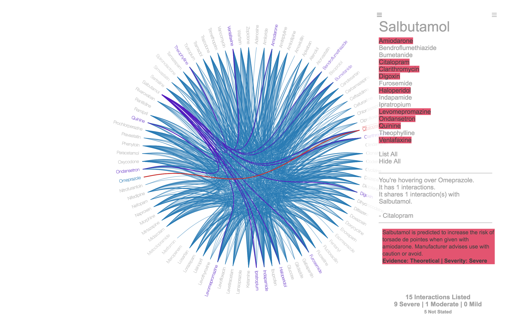

BNF Interactions
BNF
I made a few bits of progress.
I’m a bit lazy to make a ‘how-to’ tonight.
But in summary - I’ve linked my graph to the interaction messages, severities, evidence gradings taken from bnf.nice.org.uk/interaction/. This reflects the new data being listed by the BNF.
The ‘severe’ interactions are highlighted on my sidebar. (As well as severity totals as a whole.)
I’ve also made an on:hover comparison tool, for the drug selected and any other.
This graph was a significant step in terms of my learning with D3.js, and a good middle point for me to eventually integrate further graph customisations, such as built-from selected-drugs graphs, or a search bar for additional drugs to add on to the baseline (top 100 most commonly prescribed drugs). And eventually, a properly-tensionable class hierachy.
As I learn more, I’ll to customise this around features that benefit the interpretation/learning of health professionals, in a way it’s not yet currently.
If you have any feedback on changes that would make this more helpful, please get in contact through twitter.

Last Modified:Next: 'Drug Interactions with Hierarchical Edge Bundling'
Prev: 'All The Medicine'